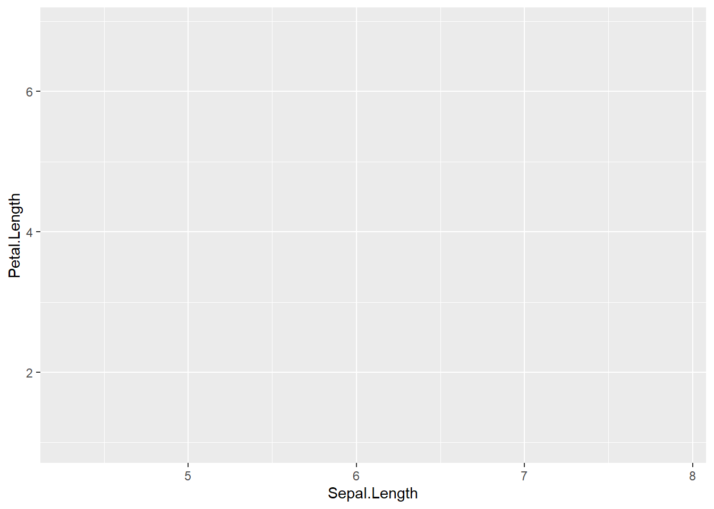
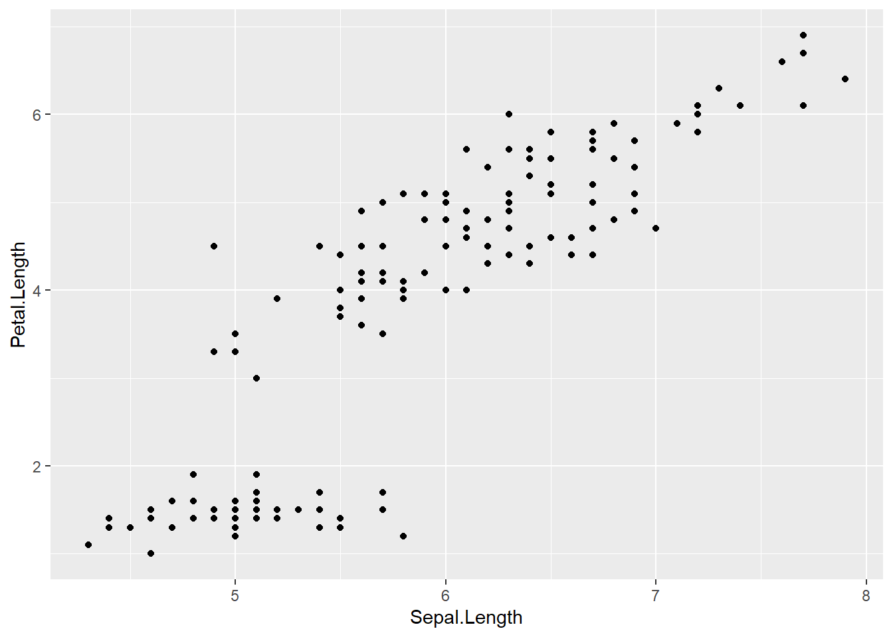
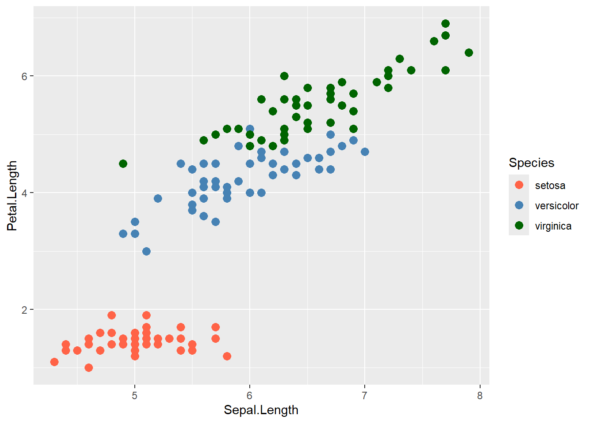
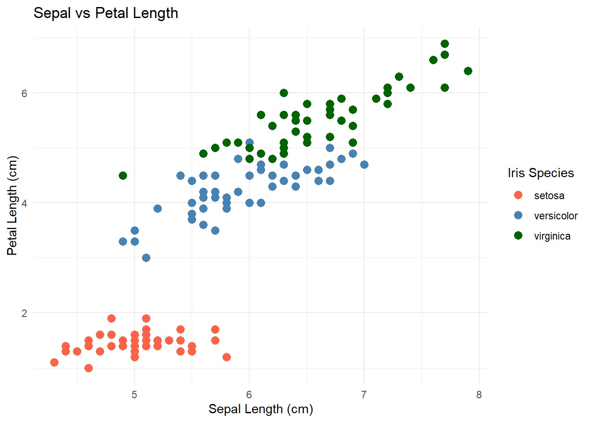
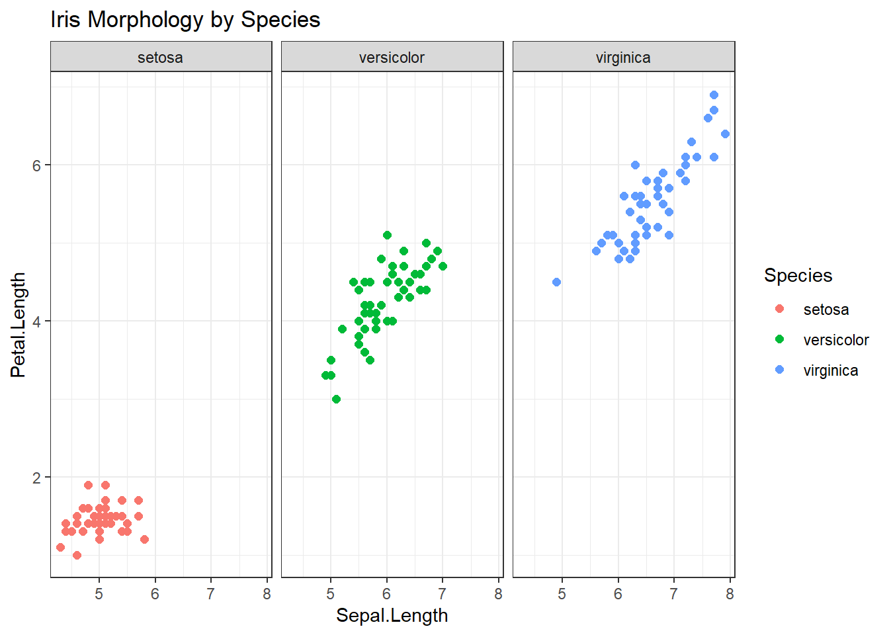

library(ggplot2)
ggplot()
Understanding the Grammar of Graphics
The idea behind ggplot2 is that a plot is built piece by piece, just like a sentence is built from words. Each layer corresponds to a component of the grammar of graphics.
| Component | Meaning | ggplot2 Analogue |
|---|---|---|
| DATA | The dataset we want to visualize. | data = iris |
| TRANS | Transformations we apply to data before plotting. | e.g. log(x), cut(), rank() |
| SCALE | The mapping from data values to visual properties. | scale_x_log10(), scale_colour_manual() |
| COORD | The coordinate system for displaying the data. | coord_cartesian(), coord_polar() |
| ELEMENT | The geometric/statistical elements drawn. | geom_point(), stat_smooth() |
| GUIDE | Visual references: axes, legends, labels. | labs(), theme(), guides() |
ggplot()library(ggplot2)
ggplot()
Meaning:
data = irisggplot(data = iris)
Meaning:
iris now forms the intangible graph: a set of variables and observations waiting to be mapped.aes() — the aesthetic mappingsggplot(data = iris, aes(x = Sepal.Length, y = Petal.Length))
Meaning:
aes() defines a mapping from variables → aesthetic space (position, colour, size, etc.).geom_point())ggplot(data = iris, aes(x = Sepal.Length, y = Petal.Length)) +
geom_point()
Meaning:
ggplot(data = iris, aes(x = Sepal.Length, y = Petal.Length, colour = Species)) +
geom_point(size = 3) +
scale_colour_manual(values = c("setosa" = "tomato",
"versicolor" = "steelblue",
"virginica" = "darkgreen"))
Meaning:
ggplot(data = iris, aes(x = Sepal.Length, y = Petal.Length, colour = Species)) +
geom_point(size = 3) +
scale_colour_manual(values = c("setosa" = "tomato",
"versicolor" = "steelblue",
"virginica" = "darkgreen")) +
labs(title = "Sepal vs Petal Length",
x = "Sepal Length (cm)",
y = "Petal Length (cm)",
colour = "Iris Species") +
theme_minimal()
Meaning:
ggplot(data = iris, aes(x = Sepal.Length, y = Petal.Length, colour = Species)) +
geom_point(size = 2) +
facet_wrap(~ Species) +
labs(title = "Iris Morphology by Species") +
theme_bw()
Meaning:
| Layer | Grammar Component | Conceptual Role |
|---|---|---|
ggplot() |
Empty COORD space | The plot canvas — potential coordinate system |
data = iris |
DATA | The dataset underpinning the visual |
aes() |
SCALE | Mapping from data → visual properties |
geom_point() |
ELEMENT | Geometric representation of data |
scale_*() |
SCALE refinement | Defines data→aesthetic range mappings |
labs(), theme(), guides() |
GUIDE | Interpretation aids for the viewer |
facet_*() |
COORD partition | Conditional plotting by variable |
aes(x = log(Sepal.Length)) or use stat_bin() to summarise data before drawing.coord_polar() to convert the Cartesian mapping into circular space.a ggplot is not a picture, but a structured sentence describing how data become a visual argument — each part of the grammar tells ggplot how to compose meaning from data.